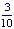

1．某校从参加高一年级期中考试的学生中抽出60名学生，将其数学成绩（均为整数）分成六段
，
…，
，
，然后画出如下部分频率分布直方图.
（3）把从
分数段选取的最高分的两人组成B组，
分数段的学生组成C组，现从B，C两组中选两人参加科普知识竞赛，求这两个学生都来自C组的概率.
查看答案与解析
【解析】（1）设第四组的频率为x，则根据频率分布直方图可有：
，解得：x=0.3.所以第四组频率为0.3.
频率分布直方图如下：
（2）60分及60分以上为第三、四、五、六组，频率和为0.15+0.3+0.25+0.05=0.75
所以及格率为75%
平均分为：45×0.1+55×0.15+65×0.15+75×0.3+85×0.25+95×0.05=71
（3）
分数段的学生人数为：
人，即C组只有3人；把从B组抽取的2人记为
、
；
组的3人记为
、
、
，则从B、C两组的5人中抽选2人去参加竞赛的基本事件有：（b1,b2）（b1,c1）,
（b1,c2）,
（b1,c3）,
（b2,c1）,
（b2,c2）,
（b2,c3）,（
c1,c2）,
（ c1,c3）,
（
c2,c3）共10种.设选中的2人都来C组的事件为
,则
包含的基本事件有（
c1,c2）,
（ c1,c3）,
（ c2,c3）共3种.
因此
.
故选中的2人都来自C组的概率为

.